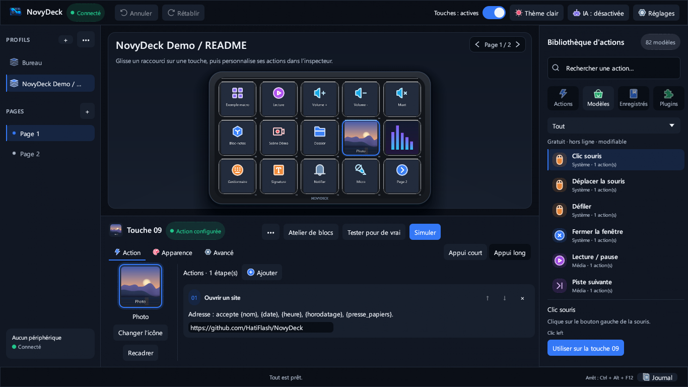
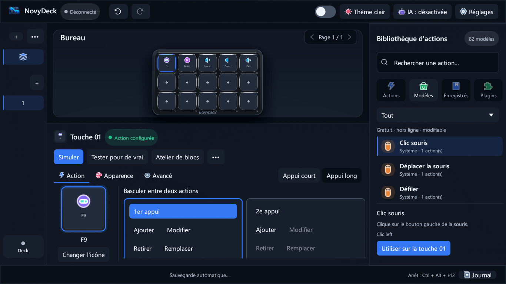
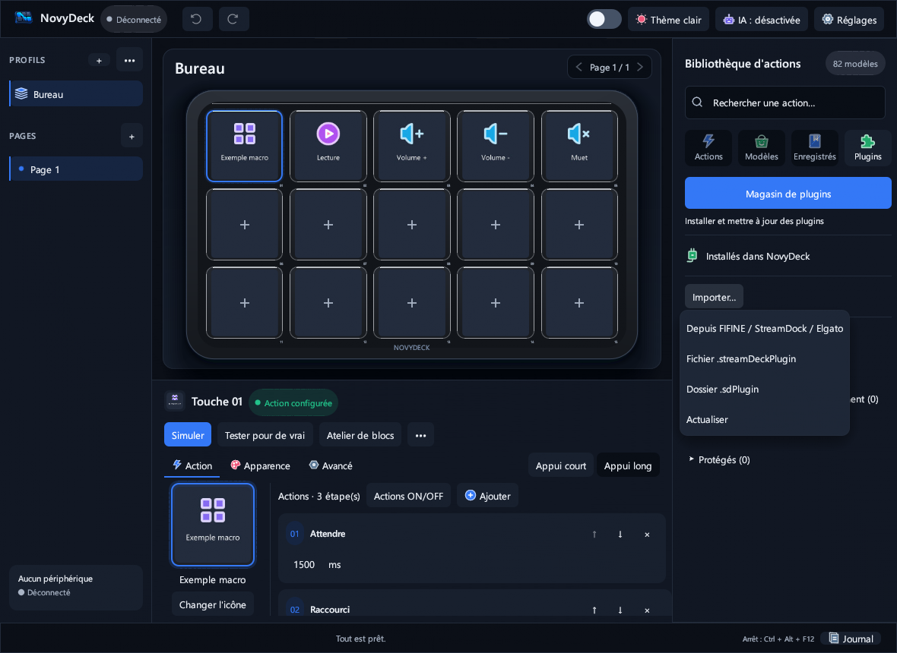
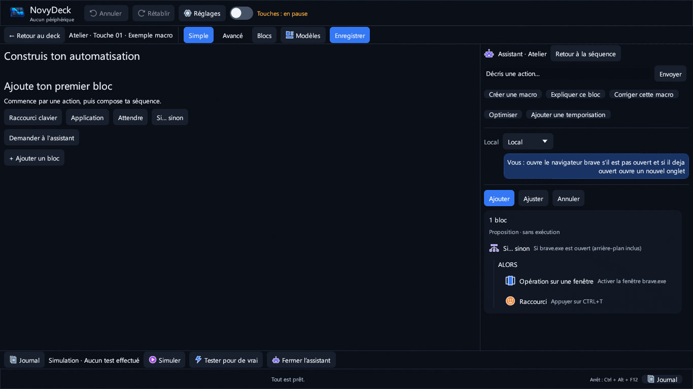
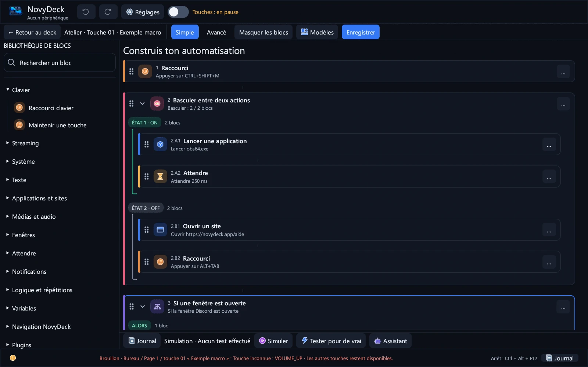
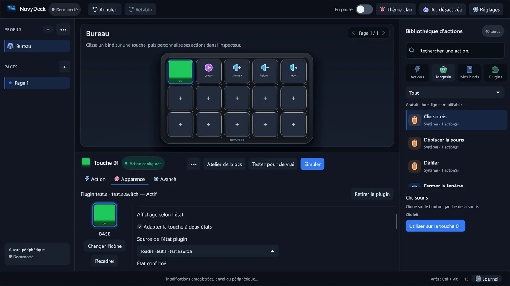

01 / 05
PERSONNALISER
Choisissez son visage.
Attribuez une image, une icône, un GIF ou une courte vidéo à vos touches. Organisez vos idées en profils, pages et dossiers.
Voir la capture en grand
LE CONTRÔLE, AU BOUT DES DOIGTS / 0.16.1
Créez le deck qui suit votre façon de travailler. Touches personnalisées, macros visuelles et plugins dans une application Windows libre.
Illustration 3D du D6 · pas une capture du matériel
01 — LE GESTE DEVIENT UN FLUX
Du premier raccourci à une séquence complète, composez un environnement qui reste le vôtre.
PERSONNALISER
Attribuez une image, une icône, un GIF ou une courte vidéo à vos touches. Organisez vos idées en profils, pages et dossiers.
Voir la capture en grand
AUTOMATISER
Dans la version 0.16.1, les deux cartes ON/OFF rendent chaque action plus claire. Dans l’Atelier, combinez raccourcis, conditions et répétitions sans écrire de script.
Voir la capture en grand
ÉTENDRE
Parcourez le magasin après avoir accepté la connexion, importez des plugins compatibles et enchaînez leurs actions dans vos macros. Les archives Elgato chiffrées ne sont pas prises en charge.
Voir la capture en grand
MULTI-ÉCRANS
L’Économiseur OLED est un plugin séparé qui peut noircir le moniteur choisi. D’autres plugins proposent des commandes pour vos services, selon leurs prérequis.
Voir la capture en grand
ASSISTANCE LOCALE
L’assistant propose des blocs à partir de règles locales. Un modèle IA local facultatif, désactivé par défaut, peut aider au-delà de ces règles : rien n’est appliqué sans votre validation.
Voir la capture en grand
02 — DANS LE DÉTAIL
Glissez, imbriquez, annulez. Recherchez vos blocs et épinglez vos favoris.

Profils, pages et changement automatique selon l’application au premier plan.

Réglez séparément les images ON et OFF ; un état de plugin n’est confirmé que s’il est réellement signalé.

Capture de l’interface Windows hors écran · aucune validation matérielle 0.16.1
03 — MATÉRIEL
NovyDeck fonctionne sur Windows 10 et 11, 64 bits. Voici ce qui a été testé — et ce qui reste à confirmer.
04 — BON À SAVOIR
Oui. NovyDeck est un logiciel libre distribué sous licence MIT.
L’application fonctionne hors ligne. Le magasin se connecte à GitHub uniquement après votre accord ; certains plugins nécessitent leurs propres services.
Non. Les règles locales sont disponibles sans modèle ; l’IA locale facultative est désactivée par défaut.
Non. La compatibilité dépend du plugin ; les plugins Elgato chiffrés ne sont pas pris en charge.
NOVYDECK · 0.16.1
Votre bureau, vos touches, vos règles. Téléchargez l’installateur Windows ou consultez la dernière version et ses autres fichiers.